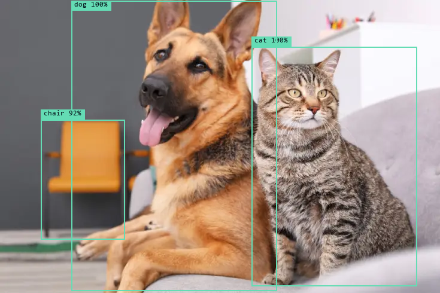
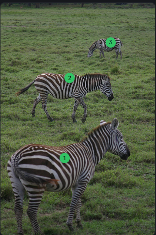
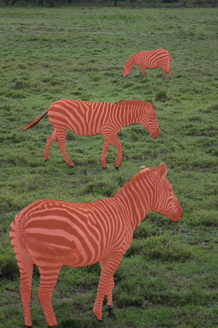

Open-source ML.
Ready to run.
Pick any model from the HuggingFace Hub. Install with one click.
Detection, segmentation, VLMs, speech, diffusion, classification, depth, OCR, and more.
Runs on CPU or GPU.
-
Florence-2-base462 MB
-
whisper-tiny150 MB
-
detr-resnet-50165 MB
-
segformer-b0-ade-51214 MB
-
Llama-3.2-1B-Instruct2.5 GB
-
InternVL2_5-1B↓ 1.9 GB
-
SmolLM3-3B↓ 6.0 GB
-
sam2.1-hiera-tiny↓ 150 MB
-
stable-diffusion-xl-base-1.0↓ 6.9 GB
-
bark-small↓ 1.2 GB
See it in action.
Three different models, three different tasks, all running locally on the same machine.



Not just LLMs.
Eleven task workspaces. Every major modality.
Detection
DETR, YOLOS, RT-DETR, D-FINE, Table Transformer. Draws labeled boxes server-side.
Segmentation
SegFormer, Mask2Former, OneFormer, EoMT. Panoptic, instance, semantic. Composited overlays.
Mask generation
SAM v1, SAM 2, SAM 2.1, SAM 3. Auto grid-sampling mode, full multi-region output.
VLMs
Qwen-VL, LLaVA, Florence-2, Moondream, PaliGemma. Ask anything about an image.
Speech
Whisper, Wav2Vec2, MMS for ASR. SpeechT5, Bark, VITS for TTS. Both directions, long-audio aware.
Classification
ViT, ResNet, ConvNeXt, BEiT, SigLIP, CLIP. Image, zero-shot, audio. Confidence-ranked labels.
Diffusion
Stable Diffusion, SDXL, FLUX, Kandinsky, PixArt. Text-to-image, img2img, inpaint.
Text generation
Llama, Mistral, Qwen, Gemma, Phi, DeepSeek. Chat-template aware, reasoning-model aware.
Depth
DPT, MiDaS, ZoeDepth, Depth Anything v1/v2, Depth Pro. Single image → colorized depth map.
Documents · OCR
TrOCR, Donut, LayoutLMv3, Pix2Struct. Read scanned pages, receipts, forms. Ask questions about them.
Everything in the Hub, ready to run.
200+ model families, each one verified against our architecture whitelist. If it shows up in LocalML, it loads. No broken downloads, no missing packages, no guesswork.
Detection
DETRYOLOSRT-DETRRT-DETRv2D-FINEConditional-DETRDeformable-DETRTable-TransformerOWL-ViTOWLv2Grounding-DINO
Segmentation
SegFormerMaskFormerMask2FormerOneFormerEoMTUperNetBEiTDPTDETR-panopticMobileViT
Mask generation
SAMSAM 2SAM 2.1SAM 3MedSAM
VLMs
Qwen-VLQwen2.5-VLQwen3-VLLLaVALLaVA-NextViP-LLaVAFlorence-2MoondreamPaliGemmaIdefics 2/3SmolVLMKosmos-2InternVLPixtralFastVLMLFM2-VLDeepSeek-VLJanus-ProFuyuOvisAriaGLM4VCohere2-VisionEmu3
Text generation
Llama 3/4GPT-OSSMistral 3Qwen 2/3Gemma 2/3/3nPhi 3/4DeepSeekSmolLM3OLMo 3OLMoEFalcon-H1Nemotron-HBitNetStarCoder 2CohereGraniteMiniMax
ASR · TTS
WhisperDistil-WhisperWav2Vec2MMSMoonshineParakeetSpeechT5BarkVITS
Diffusion
SD 1.5SD 2.1SDXLSD 3 / 3.5FLUX.1KandinskyPixArtSanaKolors
Classification
ViTDeiTSwinConvNeXtBEiTResNetEfficientNetMobileNetCLIPSigLIPSigLIP 2
Depth
DPTGLPNZoeDepthDepth AnythingDepth Anything v2Depth ProMiDaS
Documents · OCR
TrOCRDonutLayoutLMLayoutLMv2LayoutLMv3Pix2Struct
Runs everywhere you do.
Native installers for Windows, macOS, and Linux. CUDA · Apple MPS · CPU.
First launch.
LocalML isn't code-signed yet. Your OS will warn you on first run. Here's what to expect.
SmartScreen will show a blue "Windows protected your PC" screen. Click More info, then Run anyway.
Gatekeeper will say "LocalML is damaged" or "cannot be opened".
In Terminal, run sudo xattr -dr com.apple.quarantine /Applications/LocalML.app and enter your password.
Or right-click the app in Finder, pick Open, then click Open again in the dialog.
Make the AppImage executable: chmod +x LocalML-*.AppImage,
then double-click or run it from your terminal.
Code signing on Windows and macOS costs hundreds per year. We'll add it once the project can sustain it.